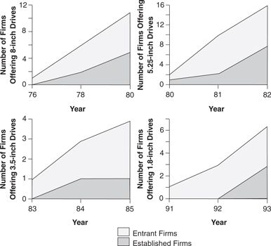

In 1989 an industry entrant in Longmont, Colorado, Prairietek, upstaged the industry by announcing a 2.5-inch drive, capturing nearly all $30 million of this nascent market. But Conner Peripherals announced its own 2.5-inch product in early 1990 and by the end of that year had claimed 95 percent of the 2.5-inch drive market. Prairietek declared bankruptcy in late 1991, by which time each of the other 3.5-inch drivemakers— Quantum, Seagate, Western Digital, and Maxtor—had introduced 2.5-inch drives of their own.
What had changed? Had the incumbent leading firms finally learned the lessons of history? Not really. Although Figure 1.7 shows the 2.5-inch drive had significantly less capacity than the 3.5-inch drives, the portable computing markets into which the smaller drives were sold valued other attributes: weight, ruggedness, low power consumption, small physical size, and so on. Along these dimensions, the 2.5-inch drive offered improved performance over that of the 3.5-inch product: It was a sustaining technology. In fact, the computer makers who bought Conner’s 3.5-inch drive—laptop computer manufacturers such as Toshiba, Zenith, and Sharp—were the leading makers of notebook computers, and these firms needed the smaller 2.5-inch drive architecture. Hence, Conner and its competitors in the 3.5-inch market followed their customers seamlessly across the transition to 2.5-inch drives.
In 1992, however, the 1.8-inch drive emerged, with a distinctly disruptive character. Although its story will be recounted in detail later, it suffices to state here that by 1995, it was entrant firms that controlled 98 percent of the $130 million 1.8-inch drive market. Moreover, the largest initial market for 1.8-inch drives wasn’t in computing at all. It was in portable heart monitoring devices!
Figure 1.8 summarizes this pattern of entrant firms’ leadership in disruptive technology. It shows, for example, that two years after the 8-inch drive was introduced, two-thirds of the firms producing it (four of six), were entrants. And, two years after the first 5.25-inch drive was introduced, 80 percent of the firms producing these disruptive drives were entrants.
Figure 1.8 Leadership of Entrant Firms in Disruptive Technology

Source: Data are from various issues of Disk/Trend Report.